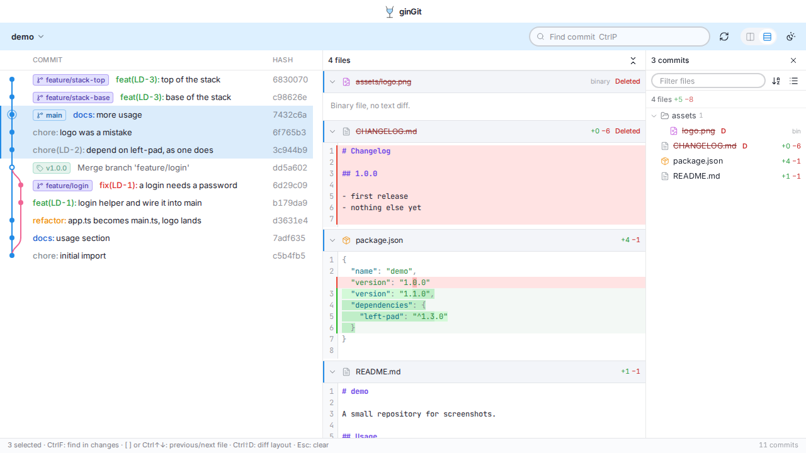

ginGit
Read-only git history, multi-commit review.
Pick any commits in the graph, or a whole branch with one click, and read every change they made as one review. No staging, no pushing, nothing it can break.

What it does
- Select many, review once
- Click, ⌘-click and ⇧-click commits like in an IDE log. The changes of all of them land in one file list and one scrollable review, each file a collapsible diff.
- One click per branch
- Every branch label is a button. Click it and the branch's own commits are selected, with stacked branches and merged pull requests told apart correctly.
- Honest aggregation
- Two commits that touched the same file are merged into one patch only when nothing else changed the file in between. Otherwise you see each commit's change, and a note says why.
- A graph that stays readable
- Lanes are computed once and drawn per row, so a history of 86,000 commits scrolls like a short one. Search filters the list and labels each hit with its branch.
- Diffs like an editor
- Side by side or unified, syntax highlighting for most languages, unchanged regions folded with a click to unfold. Added and deleted files take the full width.
- Read-only by construction
- Git runs as a child process with a short allowlist of read commands and validated arguments. Nothing in the app can write to a repository.
Shortcuts
| Open repository | ⌘O |
|---|---|
| Reload history | ⌘R |
| Find commit | ⌘F |
| Side by side ⇄ unified | ⌘⇧D |
| Previous / next file | [ ] or ⌘↑ ⌘↓ |
| Focus commits / diff / files | ⌘1 ⌘2 ⌘3 |
| Clear selection | Esc |
| Copy a hash | click it |
On Linux, Ctrl stands in for ⌘.
Install
Download the latest build from the releases page: a universal macOS app, or a Linux binary. git must be on your PATH.
Or build it yourself with Go, Node and the Wails CLI:
git clone https://github.com/rkkeepstrack/ginGit.git
cd ginGit
make build # build/bin/ginGit.app
make check # go tests, svelte-check, vitest
make snapshots # visual snapshots, in dockerOpen a repository from the menu, or start it with a path: ginGit ~/code/myrepo.